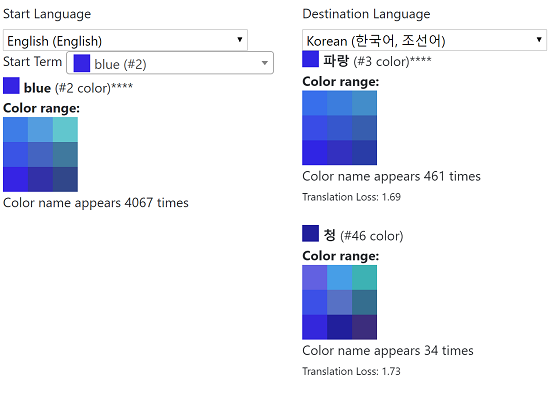
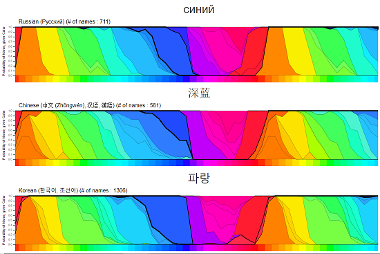
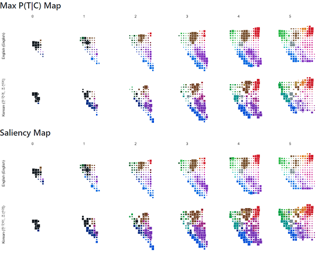
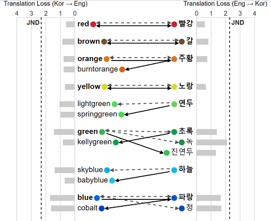
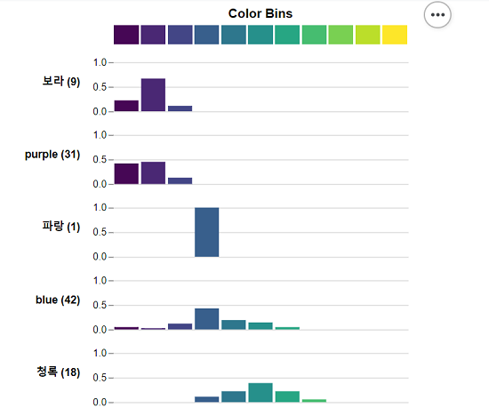

The Many Languages, Many Colors Project
Note: This is the 2019 EuroVis version of the site, the updated version is here.
Purpose
Different languages divide the color spectrum in different ways, which has been shown to influence how people perceive color. The Many Languages, Many Colors project is an attempt to measure these differences by collecting data and creating color models, and then share the results through visualizations and publicly released data sets. But first...
Take the Survey!
Before you look at what we found, please consider taking our 12 minute color perception survey. We could always use more data, and reading this post first might influence your answers.
Summary Blog Posts
Read our blog posts that summarize our results:
There is No "Blue" in Korean: Different Languages Have Different Colors
Visualizations
We have created a number of different visualizations to share our results:
Color Translator

Find translations and synonyms for colors in multiple languages and compare the ranges of colors for different color names.
Hue Color Comparisons (more languages)

Compare the terms used to divide the hue colors (the brightest, most saturated colors:  ).
).
Color Maps

Compare how English and Korean divide the full color space.
Korean-English Translation Comparison

Compare online color translations to our suggested translations.
Korean-English Viridis Color Spectrum

Compare how Korean and English color names differ on the Viridis color spectrum (  ) that is sometimes used in visualizations.
) that is sometimes used in visualizations.
Paper Diagrams
Here are links to see the actual diagrams from the paper. But note a few difficulties with these diagrams:
- In the translation comparison graph, we made an error in calculating distance (we had measured distance by 10x LAB bins, instead of regular LAB space) so our distance measure was 10x too small, making us underestimate what changes were noticeable.
- Additionally, when we try re-running the processing now, we get slightly different results than the paper probably due to library changes and subtle effects on processing (e.g., CSV file edge cases, handling unusual unicode values) though we haven't figured out exactly what the differences are.
Here are the diagram links:
- Full color maps:
- Hue Color Maps:
- English / Korean Translation comparison:
Dataset
We have made our dataset, models, and visualizations freely available for download. We plan on continuing to update this dataset as we collect more data.
Publication
Peer Reviewed Academic Paper: Color Names Across Languages: Salient Colors and Term Translation in Multilingual Color Naming Models